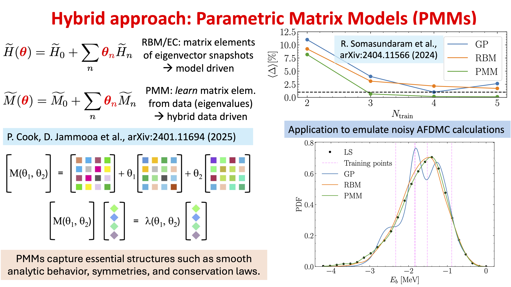
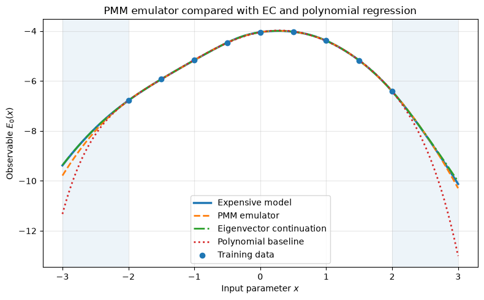
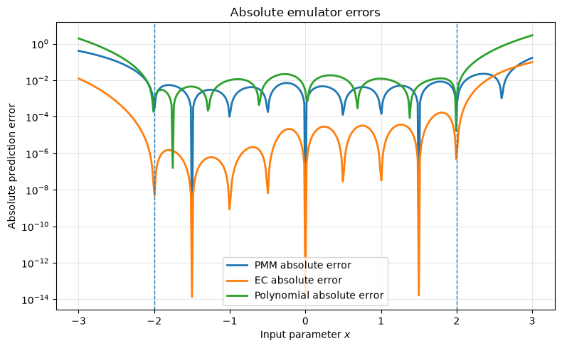

34.6. Parametric Matrix Model emulators#
Overview of PMMs#
Parametric Matric Models (PMMs) can be considered a hybrid approach: they are data driven but incorporate model structure so they are in part model driven. Fig. 34.14 provides a schematic overview of PMMs, which we flesh out in the example that follows.
{kind=link}

Fig. 34.14 Basic structure of PMM emulation compared to RBM/EC emulation with an example showing the relative performance between RBM, PMM and Gaussian Process (GP) emulator.#
Demo: simple example of a PMM emulator#
The example below demonstrates how a parametric matrix model (PMM) can be used as an emulator for a more expensive model, and how it compares with eigenvector continuation (EC). [Note: this example and much of the commentary originated with ChatGPT 5.5.]
The basic idea is to replace an expensive calculation with a much smaller matrix model whose eigenvalues reproduce the desired observable.
Details of the example#
1. The “expensive” model#
The demonstration example defines a larger parameter-dependent Hamiltonian, \(H_{\rm true}(x)\), where \(x\) is an input parameter. In this case, the Hamiltonian \(H_{\rm true}\) is construction as a matrix with dimension \(40 \times 40\). (In an exercise you can modify the code to try a different matrix.) The observable we want to emulate is the ground-state energy,
where \(\lambda_{\min}\) is the lowest eigenvalue.
In practice we use numpy.linalg.eigvalsh to find the eigenvalue.
In a real application, solving \(H_{\rm true}(x)\) could represent doing a large-scale diagonalization, applying an expensive many-body method, or doing a high-fidelity numerical simulation.
2. Generating training data#
The expensive model is evaluated at at a small number of parameter values (in this case 9) in the interval \(x_i \in [-2,2]\), and stores the corresponding outputs as \(y_i = E_0(x_i)\). These points form the training data,
The emulator is trained only on this sparse set of points. It is then tested on a denser grid (interpolation), including points outside the training region (extrapolation).
3. The PMM emulator#
The PMM emulator is a smaller matrix,
where \(A_0\), \(A_1\), and \(A_2\) are real symmetric matrices that are to be learned. In the coded example, \(P(x;\theta)\) is only \(4 \times 4\), much smaller than the \(40 \times 40\) truth model. The parameters \(\theta\) are the independent entries of the symmetric matrices \(A_0\), \(A_1\), and \(A_2\). These entries are adjusted during training.
Note that the PMM prediction is not a directly fitted scalar polynomial. Instead, the prediction is the lowest eigenvalue of the learned matrix:
Thus the predicted scalar output is obtained implicitly through a small eigenvalue problem.
4. Training the PMM#
The PMM is trained by minimizing a loss function \(\mathcal{L}(\theta)\), which is the difference between the PMM eigenvalue and the training data:
In the code, this is done using a nonlinear least squares optimizer. Because the eigenvalues depend nonlinearly on the matrix entries, the optimization problem is nonlinear even though the matrix elements themselves are simple polynomials in \(x\). Multiple random restarts are used to reduce the chance of finding a poor local minimum.
5. Why this is different from polynomial regression#
The code also fits an ordinary scalar polynomial,
which serves as a baseline comparison.
The polynomial model fits the observable directly as a scalar function of \(x\). By contrast, the PMM fits a matrix whose eigenvalue gives the observable. This distinction matters because eigenvalues of parameter-dependent matrices can produce complicated nonlinear behavior, including avoided-crossing-like curvature and rapid changes in slope. So even if the matrix elements of \(P(x;\theta)\) are only low-order polynomials, the eigenvalues of \(P(x;\theta)\) can have a richer functional structure than an ordinary low-order scalar polynomial.
6. Interpolation and extrapolation#
The training data are generated only in the interval \(-2 \le x \le 2\) while the model is then tested on a wider interval \(-3 \le x \le 3\). This separates the test region into two parts:
Interpolation region: \(-2 \le x \le 2\)
Extrapolation region: \(x < -2\) or \(x > 2\)
The code reports root-mean-square errors in both regions for the PMM, eigenvector continuation, and the polynomial baseline. This allows one to see whether the emulator is merely fitting the training region or whether it also captures useful structure outside the training domain.
PMM emulator demo with eigenvector continuation
-----------------------------------------------
Number of training points: 9
Truth matrix dimension: 40
PMM matrix dimension: 4
PMM polynomial degree: 2
Polynomial baseline degree: 6
PMM training loss: 3.727e-22
EC basis dimension: 9
Smallest raw EC overlap eigval: 2.562e-05
RMSE on dense test grid
PMM interpolation region: 3.880e-03
PMM extrapolation region: 1.389e-01
EC interpolation region: 3.833e-05
EC extrapolation region: 2.963e-02
Polynomial interpolation: 1.010e-02
Polynomial extrapolation: 9.715e-01


Summary of results#
The first plot compares four curves:
The expensive model result, \(E_0(x)\)
The PMM emulator prediction, \(\widehat{E}_0(x)\)
The eigenvector-continuation prediction, \(E_0^{\rm EC}(x)\)
The polynomial regression baseline, \(p(x)\)
The training points are shown as markers. The shaded regions indicate extrapolation beyond the training interval. This plot answers the qualitative question:
Does the learned PMM emulator reproduce the expensive model over the test range?
The second plot shows the absolute prediction errors,
for the PMM and EC emulators, and the polynomial baseline. Because the vertical axis is logarithmic, the plot can show small and large errors on the same figure. This is useful because emulator errors often vary by orders of magnitude between the interpolation and extrapolation regions. The semi-log plot makes it easier to see where each emulator is accurate, where it fails, and how its error compares with the alternatives.
The PMM part of the demonstration illustrates the main emulator idea:
The expensive calculation requires diagonalizing a larger matrix,
while the PMM emulator only requires diagonalizing a small matrix,
After training, the PMM provides a fast surrogate for the expensive observable.
The important point is that the PMM does not simply interpolate the observable with an ordinary scalar function. Instead, it learns a small parameter-dependent matrix whose spectral properties mimic the behavior of the target system.
What eigenvector continuation does in this example#
Set-up of EC#
As described in Section 34.3, eigenvector continuation (EC) is a reduced-basis method for parameter-dependent eigenvalue problems. Let’s review how it is implemented here. Suppose one has a family of Hamiltonians,
and solves the full problem at selected training points,
At each training point one computes an eigenvector, usually the ground-state vector,
These training eigenvectors (called snapshots) are then used to form a reduced subspace,
In the code, this is done by diagonalizing the full truth Hamiltonian \(H_{\rm true}(x_i)\) at each training point and saving the corresponding ground-state eigenvector.
Projecting the Hamiltonian#
Once the EC basis is constructed, the Hamiltonian is projected into this reduced subspace. If the training eigenvectors are denoted by \(|\psi_i\rangle\), where
then the projected Hamiltonian is
The overlap matrix is
The EC prediction is obtained by solving the generalized eigenvalue problem
The lowest eigenvalue gives the EC ground-state emulator,
In the code, the EC basis is first orthonormalized to improve numerical stability. If \(Q\) denotes the orthonormal EC basis, then the generalized eigenvalue problem becomes an ordinary projected eigenvalue problem,
and
Similarities between PMMs and EC#
Both PMMs and eigenvector continuation replace a large eigenvalue problem with a smaller one. The PMM uses a learned matrix,
and predicts
Eigenvector continuation uses a projected Hamiltonian,
and predicts
So both methods have the schematic structure
This is the main conceptual connection. The central difference is how the small matrix is obtained. In eigenvector continuation, the reduced matrix is derived directly from the original Hamiltonian and a basis of training eigenvectors:
The reduced matrix elements therefore have a direct Hilbert-space meaning. In the PMM emulator, the small matrix is not usually a literal projection of the original Hamiltonian. Instead, its entries are trainable functions:
The matrices \(A_0,A_1,A_2,\ldots\) are chosen by fitting the PMM eigenvalues to training data. Thus:
whereas
Consequence for training data#
Eigenvector continuation uses more information from the expensive calculation. It needs training eigenvectors, or at least enough information to form a reduced basis and compute projected matrix elements.
The PMM example shown here only uses scalar training data,
It does not require the full eigenvectors of the \(40 \times 40\) truth model. This is an important practical distinction. EC is most natural when one has access to the underlying Hamiltonian and wave functions. PMMs are more flexible when one only has input-output data.
Variational structure#
Eigenvector continuation has a variational interpretation when applied to Hermitian Hamiltonians. If the EC basis is a subspace of the full Hilbert space, then the EC ground-state energy is an upper bound to the true ground-state energy:
This is the usual Rayleigh-Ritz variational property. The PMM emulator does not automatically have this property. Since \(P(x;\theta)\) is a learned effective matrix rather than a projection of \(H_{\rm true}(x)\), its lowest eigenvalue need not be an upper bound to the true ground-state energy. Therefore, EC has a stronger physics-based structure, while the PMM has greater flexibility as a data-driven emulator.
Why PMMs can resemble EC anyway#
Although the PMM matrix is not explicitly constructed by projection, it can still behave like an effective reduced Hamiltonian. For example, the fitted PMM
may be interpreted as a learned low-dimensional effective Hamiltonian whose eigenvalues mimic those of the larger system. In this sense, the PMM can be viewed as learning something like an EC reduced Hamiltonian directly from data, without explicitly constructing the EC basis. This is especially plausible when the target observable is controlled by a small number of important spectral features, such as nearby levels, avoided crossings, or collective modes.
Expected behavior in this example#
For this synthetic example, EC should usually perform very well, because the truth model is itself a parameter-dependent Hermitian matrix. The EC basis vectors are taken directly from exact eigenvectors of that truth model, so the reduced EC subspace is physically adapted to the problem. The PMM, by contrast, sees only the scalar ground-state energies. It must infer an effective spectral model from input-output data alone. Therefore, one should expect the following qualitative hierarchy in the type of demonstration here:
EC \(\longrightarrow\) often best when wave functions and Hamiltonian are available;
PMM \(\longrightarrow\) useful when only scalar observables are available;
polynomial regression \(\longrightarrow\) simpler but less spectrally informed.
This is not a strict ordering, but it is a useful expectation for this demonstration. However, see below for examples when PMM is a clear winner over EC.
Summary comparison of PMM and EC#
Feature |
PMM emulator |
Eigenvector continuation |
|---|---|---|
Reduced object |
Learned matrix \(P(x;\theta)\) |
Projected Hamiltonian \(H_Q(x)\) |
Prediction |
Eigenvalue of learned matrix |
Eigenvalue of projected Hamiltonian |
Needs full Hamiltonian? |
No, not necessarily |
Usually yes |
Needs training eigenvectors? |
No |
Yes |
Uses scalar training data? |
Yes |
Not usually sufficient |
Variational upper bound? |
Not automatic |
Yes, for Hermitian ground-state problems |
Matrix elements |
Optimized parameters |
Hilbert-space matrix elements |
Best viewed as |
Data-driven spectral emulator |
Physics-informed reduced-basis method |
The PMM emulator and eigenvector continuation are therefore complementary. Eigenvector continuation is a reduced-basis method built from actual wave functions. It is strongly physics-informed and often variational. The PMM is a learned spectral emulator. It keeps the useful idea of predicting through a small eigenvalue problem, but it does not require access to the underlying wave functions or projected Hamiltonian matrix elements.
In the present demonstration, the PMM can be thought of as a data-driven attempt to learn a small effective Hamiltonian, while EC constructs such a small Hamiltonian directly from the true eigenvectors.
Demonstration Summary#
The full example compares three emulator strategies:
PMM emulator: learns a small matrix from scalar data and predicts with an eigenvalue.
Eigenvector continuation: projects the true Hamiltonian into a subspace spanned by training eigenvectors.
Polynomial regression: fits the scalar observable directly.
The PMM prediction is
The EC prediction is
The polynomial prediction is
The comparison illustrates the tradeoff:
EC is most powerful when the Hamiltonian and wave functions are available.
PMMs are attractive when one wants a spectral emulator trained only on scalar input-output data.
Polynomial regression is simple, but it lacks the eigenvalue structure that can naturally encode level mixing and avoided crossings.
Comparison of PMMs to EC#
PMMs will be superior to EC mainly when you cannot or do not want to build a projection basis from actual wave functions. EC is very strong when the Hamiltonian and eigenvectors are available: it is a reduced-basis/subspace-projection method built from eigenvector snapshots. That gives it variational structure and rapid convergence for many parametric quantum problems (review article on RBMs). PMMs instead learn finite-dimensional matrix equations with trainable operators, so they can be used more like black-box or gray-box emulators from data (Nature article on PMMs).
Cases where PMMs can beat EC#
1. Only scalar observables are available#
EC typically needs access to wave functions, or at least enough information to form matrix elements like
But many realistic data sets only provide scalar observables:
such as energies, radii, cross sections, phase shifts, separation energies, or experimental data.
A PMM can be trained directly on
without knowing the underlying wave functions. In that setting EC may not even be applicable, while a PMM is.
Example: training an emulator for nuclear binding energies as a function of EFT couplings using only published energies from several calculations. If the wave functions and Hamiltonian matrix elements are unavailable, EC cannot be constructed directly, but a PMM can still fit a spectral surrogate.
2. The expensive calculation is a black box#
Suppose the true calculation is a legacy code, DFT solver, coupled-cluster code, Monte Carlo calculation, or experimental pipeline that returns only outputs. You may be able to query
but not access the internal Hilbert-space vectors.
EC wants internal state information. PMMs only need training data.
Example: an EDF calculation returns fission barrier heights, radii, or deformation energies, but the internal HFB quasiparticle states are not conveniently exposed or comparable across parameter values. A PMM could emulate the deformation-energy surface from input-output data.
3. The target is not an eigenvalue of a known Hamiltonian#
EC is naturally designed for parametric eigenvalue problems. PMMs are broader: the PMM paper frames them as learned matrix equations whose outputs are implicit functions of input features; the equations can be algebraic, differential, or integral, not only Hermitian eigenvalue problems (Nature article on PMMs]2).
So PMMs may be preferable when the observable is governed by some hidden low-dimensional structure but is not literally the lowest eigenvalue of a Hamiltonian available to you.
Examples:
reaction cross sections as functions of beam energy and optical-potential parameters;
phase shifts or \(S\)-matrix elements;
locations of resonances or poles;
fission yields;
neutron-star mass-radius observables;
mappings between observables, such as predicting a radius from an energy or vice versa.
Some of these can be formulated with projection methods, but EC is no longer the direct natural tool unless the corresponding state vectors and operators are available.
4. You want an observable-to-observable emulator#
EC maps parameters to solutions by projecting the governing Hamiltonian. A PMM can instead learn a relation such as
or
That kind of emulator does not require a Hamiltonian parameterization at all. The PMM structure can still use eigenvalues or matrix equations to encode nonlinear constraints.
Example: learn a compact map from a few calculated nuclear observables to another observable across an ensemble of interactions. EC is not naturally defined because the input features are themselves observables, not Hamiltonian parameters.
5. Many disconnected data sources must be combined#
EC works best when all training vectors live in a common Hilbert space with a common representation. That can be awkward if the data come from different solvers, regulators, basis truncations, lattice spacings, EDF implementations, or even experiments.
PMMs can fit the output relationship directly, provided the data are placed in a common feature space.
Example: combine predictions from several nuclear EDFs, ab initio calculations, and experimental constraints to emulate a trend. There may be no single shared Hilbert space in which EC basis vectors can be assembled.
6. The representation changes with the parameter#
EC becomes more complicated when the basis, mesh, continuum treatment, channel space, or truncation changes with the parameter. One then has to define overlaps between states computed in different representations.
PMMs avoid this because they do not require state-vector overlaps.
Example: emulating a reaction observable as a function of energy where the number of open channels changes. A PMM can learn a matrix-valued effective description of the observable; EC would need careful treatment of channel-space changes and scattering boundary conditions.
8. You want a compact interpretable surrogate, not just a projector#
EC’s reduced matrix is interpretable as a projection of the original Hamiltonian. PMMs have a different kind of interpretability: a small learned matrix equation. The entries of
can be inspected as an effective low-dimensional model. The PMM paper describes the approach as replacing operators in known or supposed governing equations with trainable parametrized ones (Nature article on PMMs]2).
That can be useful when the goal is not only to emulate but also to discover a low-dimensional effective structure.
Example: fitting a two-level effective Hamiltonian to data near a shape-coexistence avoided crossing. The fitted off-diagonal coupling can be interpreted as an effective mixing strength.
9. You have noisy experimental data#
EC is typically an emulator for deterministic calculations: it projects a known Hamiltonian. It does not by itself solve the problem of fitting noisy, incomplete, or inconsistent experimental data.
A PMM can be trained statistically, with a loss function or likelihood such as
and can incorporate regularization or Bayesian priors on the matrix elements.
Example: fitting resonance energies or scattering observables from experimental data with uncertainties. A PMM can be used as the model class directly; EC would still need an underlying Hamiltonian and training eigenvectors.
10. The “truth” problem is too expensive even at training points#
EC needs high-fidelity solutions at selected training points. If obtaining even a few accurate eigenvectors is extremely expensive, a PMM might be trained from cheaper partial information, lower-fidelity data, or mixed-fidelity data.
Example: train a PMM on a combination of many cheap approximate calculations and a few expensive benchmark points. EC usually assumes the training snapshots are high-quality state vectors from the same problem.
Practical hierarchy#
We can summarize the comparison as:
Situation |
EC likely better |
PMM likely better |
|---|---|---|
Hamiltonian available |
Yes |
Maybe |
Wave functions available |
Yes |
Not needed |
Need variational upper bound |
Yes |
No |
Only scalar data available |
No |
Yes |
Black-box solver |
Hard |
Yes |
Experimental data with uncertainties |
Indirect |
Natural |
Observable-to-observable map |
Not natural |
Natural |
Common Hilbert space exists |
Yes |
Not required |
Need spectral/branch structure from scalar data |
Maybe |
Yes |
Want reduced-basis physics fidelity |
Yes |
Maybe |
Want flexible data-driven surrogate |
Maybe |
Yes |
So the strongest statement is:
PMMs are not generally superior to EC for clean parametric Hamiltonian eigenvalue problems where accurate eigenvectors and matrix elements are available. EC is usually the more physics-constrained method there. PMMs become superior when the problem is black-box, data-only, observable-to-observable, noisy, representation-changing, or not naturally formulated as a projected Hamiltonian problem.
When PMM outperforms EC#
Why PMM can outperform EC |
What is happening |
|---|---|
Observable simpler than wave function |
EC must represent the state; PMM only represents the scalar output. |
Many-body product or near-product structure |
Snapshot overlaps can decay rapidly with system size, requiring many EC vectors. |
Fixed global EC basis |
A small global subspace may not cover the state trajectory over a wide parameter domain. |
PMM has extra variational freedom |
It learns an effective matrix, not necessarily a projected Hamiltonian. |
Noisy or difficult wave-function overlaps |
PMM can avoid constructing overlap and Hamiltonian kernels from noisy states. |
Sparse training data |
A strong spectral inductive bias may beat a poorly conditioned projected basis. |